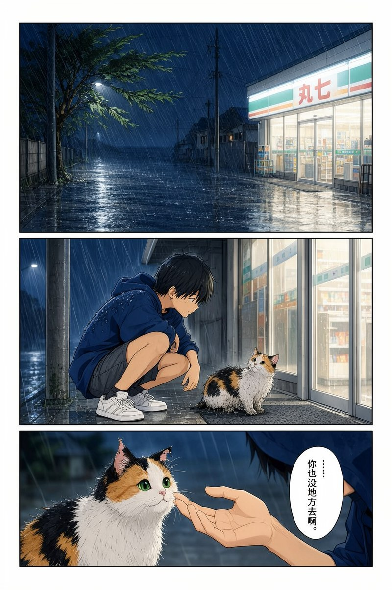
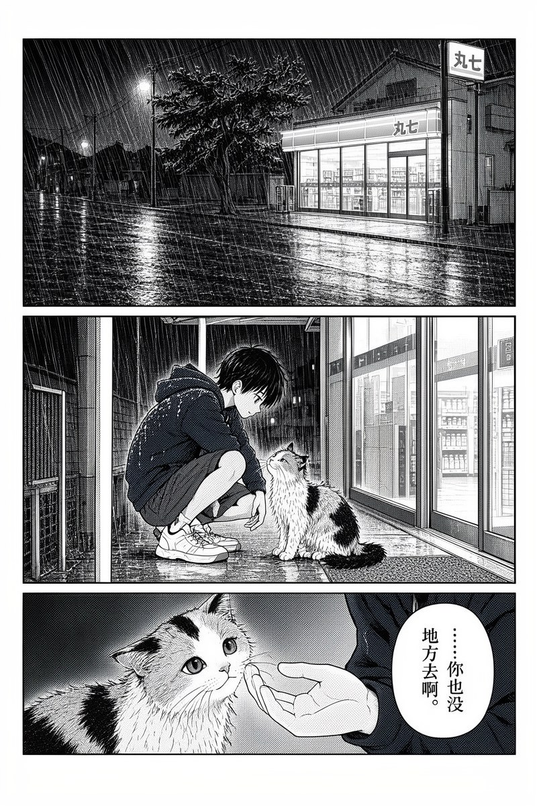
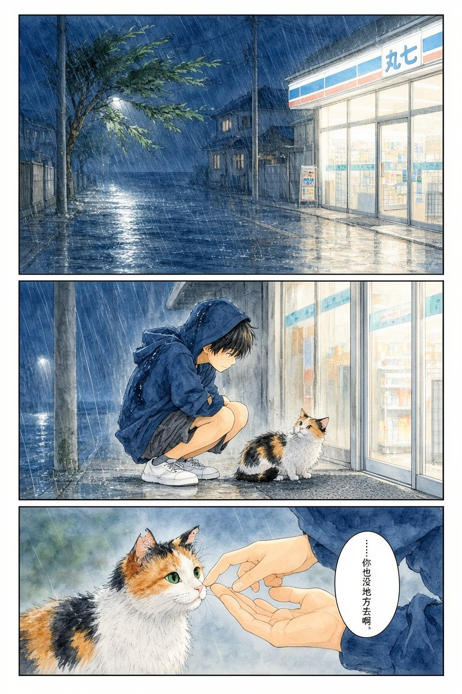
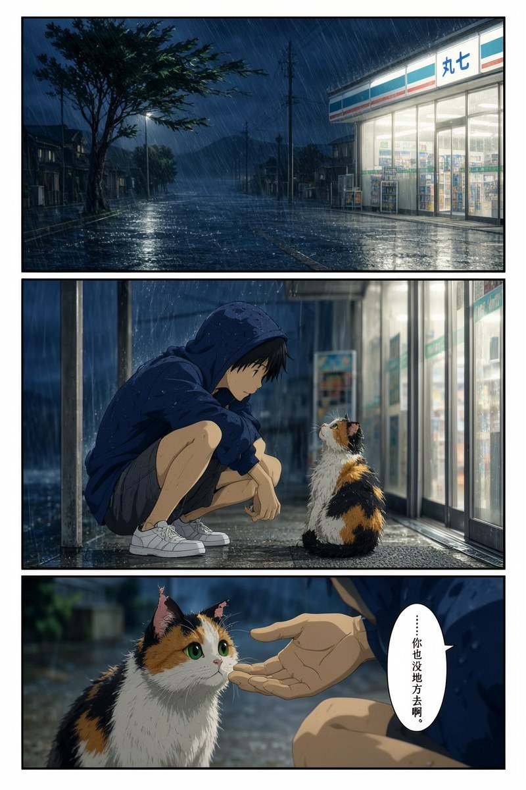
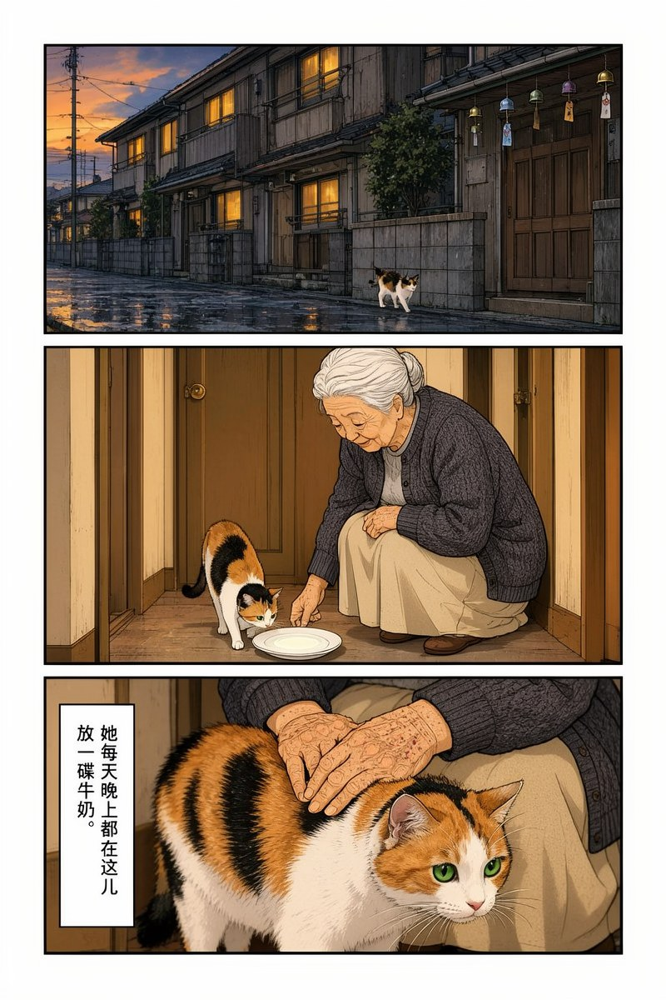
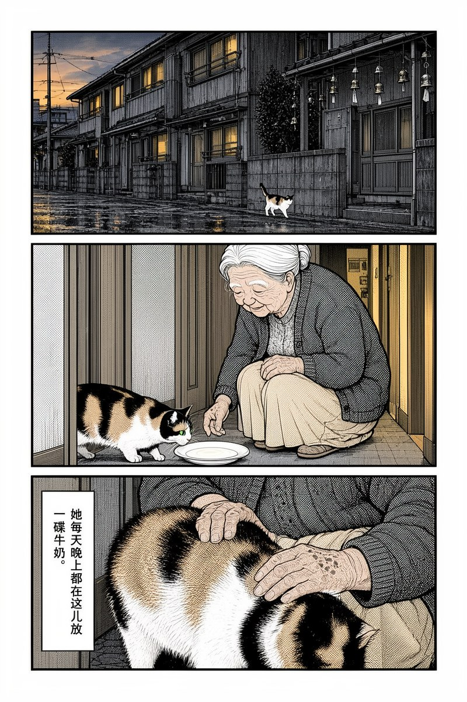
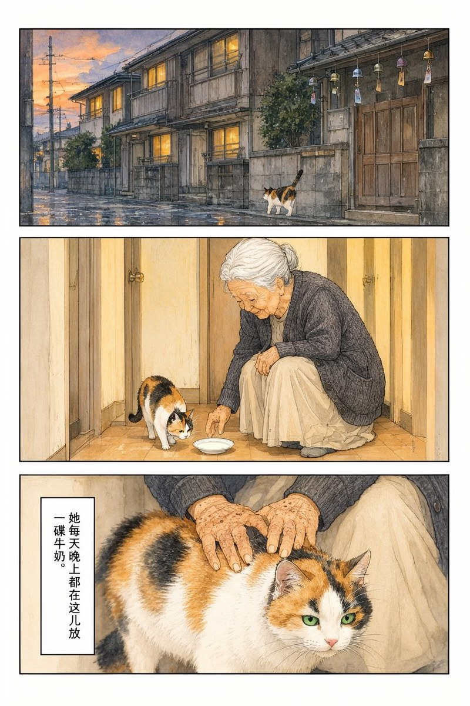
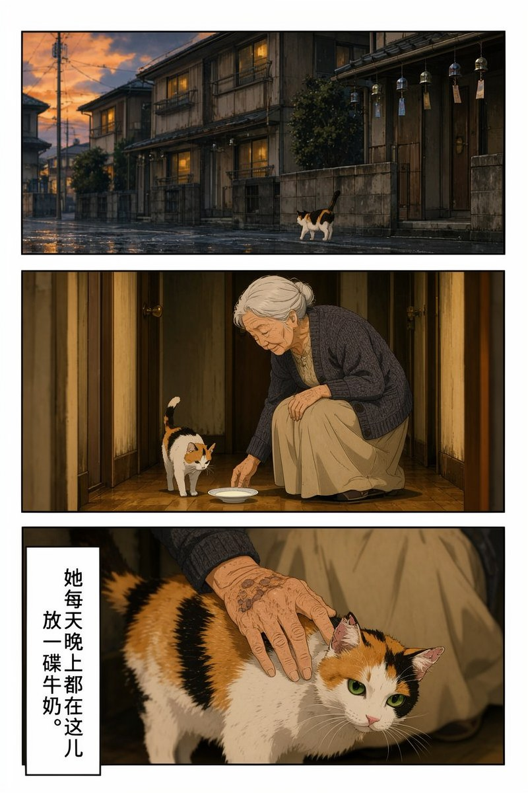

同一段分镜、同一个 seed，只换画风块——其余提示词一字不改。
| 彩色赛璐璐 沿用《末班车》口径：清晰描线 + 平涂 + 柔和光影 | 黑白网点 全图仅黑白灰：纯黑实心 + 细密网点，无任何彩色 | 水彩柔光 淡彩晕开 + 纸纹可见 + 大量留白 | 厚涂电影感 剧场版动画背景美术：笔触可见 + 强明暗 + 景深 | |
|---|---|---|---|---|
| P1 台风夜 |  |  |  |  |
| P6 一碟牛奶 |  |  |  |  |